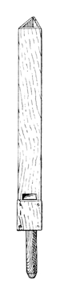

Flute Triangular English
Triangular Flute English

|
Flûte Triangulaire French Flute Triangular English Triangular Flute English |
|
Irwin lists Flute Triangulaire with the following description:
An open wood Flute of triangular cross-section and wide mouth, at 16' or 8' on the manuals, usually the latter. The tone is hollow and dull and not so prominent as that from the Hohlflöte. The octave harmonic is strong, as well as the fundamental. Its firm, quick, neutral-colored speech can support the Diapasons and other flues well. ... Undoubtedly, the softer, higher-pitched overtones are absorbed in the more acute angles of these pipes. The decrease in scale caused by building only three walls tends to increase the number of higher overtones. Probably the decrease in scale overrides the offect of the absorbing sharp angles, at least in the smaller scales and smaller high-pitched pipes of the stop. This tone is subdued compared to that of a quadrangular Hohlflöte.
In his entry for Pyramid Flute, he adds �Triangular Flutes of tapered form are also made, and are quite dull in tone, although sometimes loud.� Maclean list the Flûte Triangulaire as being of 4' pitch. Skinner maintains that its tone does not justify the extra cost of construction.
The photograph shows a 4' Flûte Triangulaire at Culver Academies, Indiana, USA, and appears here courtesty of John Gouwens. See below for sounds clips of this stop.
The name Triangular Flute appears only in the caption of an illustration, reproduced here, in Wedgwood's entry for Hohlflöte; the name Flute Triangular does not appear in the literature. We assume them both to be synonymous with Flûte Triangulaire.
Osiris contains a dozen and a half examples of Flûte Triangulaire, all at 4' pitch except for two at 8'. The earliest examples are from the 1920's.
Flute Triangular 4', Swell; First Congregational Church, Binghamton, New York, USA; Aeolian-Skinner 1932.
Flute Triangular 4', Swell; Cathedral of Our Lady of Peace, Honolulu, Hawaii, USA; Aeolian-Skinner 1934.
Triangular Flute 4', Great; Greyfriars-Kirk, Glasgow, Scotland; Hamilton 1866.
Triangular Flute 4', Swell; Woolsey Hall, Yale University, New Haven, Connecticut, USA; Skinner 1928.
Triangular Flute 4', Great; Bethlehem Lutheran Church, Sheboygan, Wisconsin, USA; Austin 1993. (Triangular Flute may have come from a previous organ.)
Triangular Flute 4', Swell; Damascus United Methodist Church, Washington DC, USA; Skinner 1930.
Flûte Triangulaire 4', Swell; Culver Academies, Indiana, USA; Möller 1951. (See below for sound clips.)
See the Sound Files appendix for general information.
| Flûte Triangulaire 4', Swell | Culver Academies, Indiana, USA | Möller, 1951 | arpeggio | St. Anne | St. Anne (solo) |
| Flute Triangulaire 4', Choir | Kellogg Auditorium, Battle Creek, Michigan, USA | Aeolian-Skinner, 1933 | St. Anne |
|
Original site compiled by Edward L. Stauff. For educational use only. FluteTriangulaire.html - Last updated 13 February 2009. |
Home Full Index |